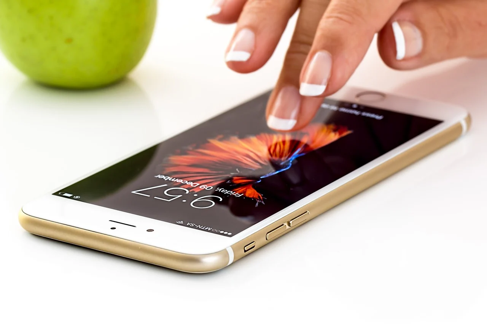
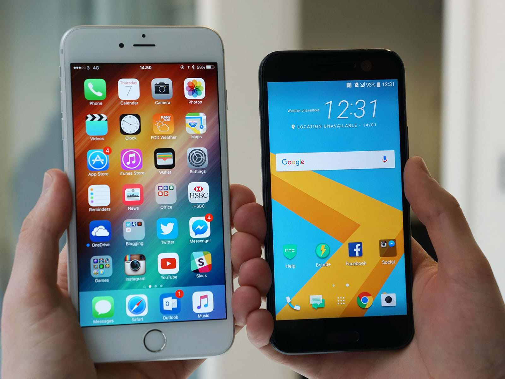
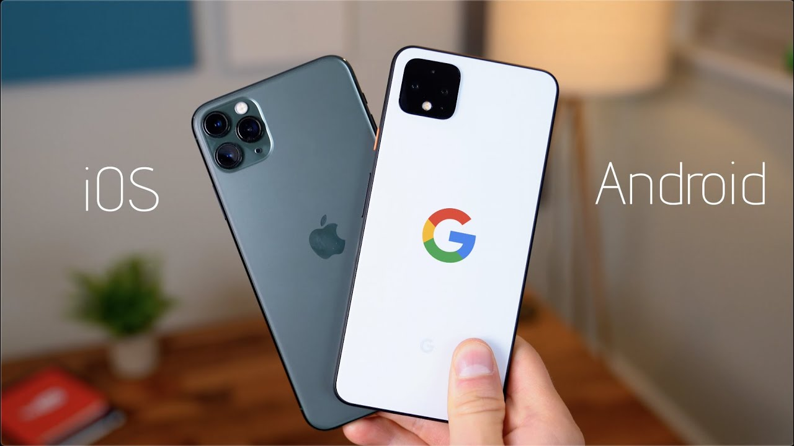

Why IPhone is popular: 5 reasons
The most popular phone in the world is considered to be the IPhone.
Millions of people eagerly follow APPLE presentations.
Although models of other brands are released every year, they are cooler in terms of hardware, price, and have many new features, but still millions of people choose Apple products.
People use their technique and no longer want to buy something else. What is the reason?

Technical advantages
We need to start with the most important thing - this is that the company has established itself as an innovator.
Apple smartphones always use the most advanced technologies and innovations. But innovation isn't just about technology, it's about how technology is used, updated, and developed over time.
And this is where the iPhone is undeniably the first of its kind!
Think of the iPhone 5S, this phone set the modern form and function of the smartphone.
Many features have become the default for modern smartphones.
Remember when the Touch ID scanner appeared, it was such an innovation that took over the world!
Apple makes durable models, the 5S has become the most popular phone, and its little brother SE is generally considered the most affordable and best phone for the money.
No pre-installed "garbage"
Have you used Android? Then you probably noticed a bunch of unnecessary settings, additional chips that some like, others scare.
It's somehow difficult and incomprehensible, before you start using it comfortably,
you need to set up your phone, but people don't need it: we want to get it out of the box and work.
Ease of use
This point follows from the previous one.
But there is much more to add. For example, software always comes out for IOS earlier, and it is much better developed, there are exclusives.
There is no need to worry about the safety of your smartphone, as all applications are thoroughly checked. The built-in Safari browser is very easy to navigate and also safe, so you never get a virus.


Thanks to the high-tech IOS, everything works instantly. It takes fractions of seconds to open applications, while on Android it takes longer.
One of the most convenient, necessary technologies is 3D Touch.
Pressing hard to bring up an additional taskbar that gives the user access to interesting functions.
But one of its most correct uses occurs when working with a keyboard. If you press the spacebar harder, you can move the cursor to any point.
And it is very convenient for both ordinary users and those who write posts in social networks.
All this simplicity is also very nicely animated, so we move on to the next point.
Design
In fact, the iPhone is perfect both externally and internally.
When people pay $ 600 or more for a smartphone, they want it to look the part.
The rest of the brands keep up with Apple, but just hold the same 7 in Jet Black and you will get it.
Modern models are made entirely of glass. And speaking of 5S again, it is made of aluminum.
A separate topic is animation design. Probably everyone knows that animation in iPhone is very different from animation in Android.
This smoothness, clear drawing of each element, you can see the beautiful opening and closing of each application to the millimeter.
For Android, everything happens abruptly and roughly, even if it is more powerful, but for everyday use it takes a little aesthetics.